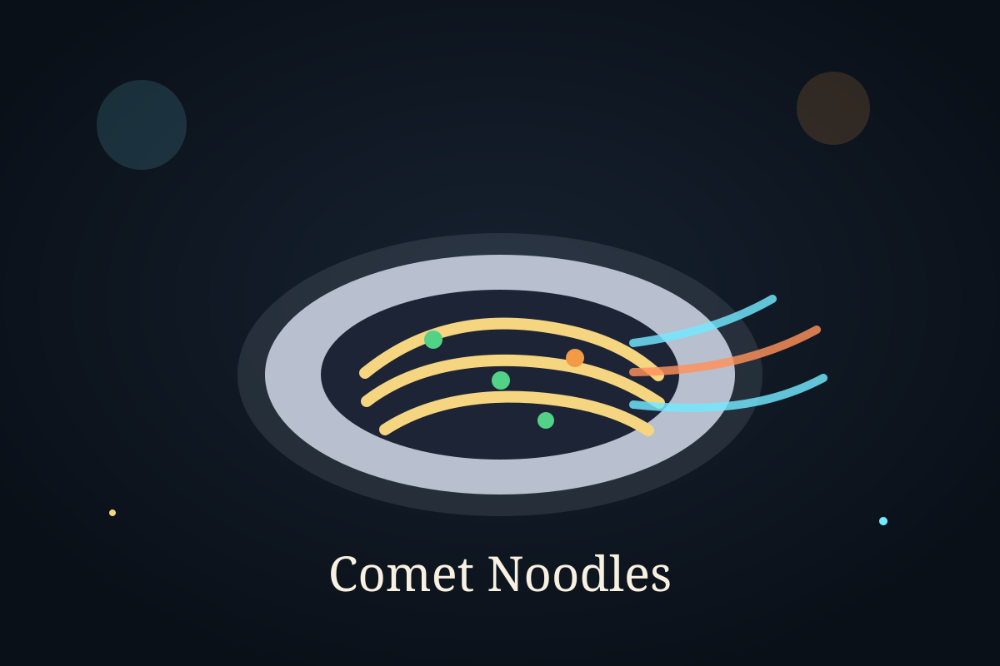

Time Module

Ingredient Vault
Ingredients
- 200 g noodles
- 1 tablespoon oil
- 3 cloves garlic, chopped
- 1 onion, sliced
- 1 cup mixed vegetables
- 2 tablespoons soy sauce
- 1 tablespoon chili sauce
- 1 teaspoon vinegar
- Salt and pepper to taste
Cooking Sequence
Step-by-step instructions
- Cook the noodles according to the package instructions, then drain them.
- Heat oil in a pan and stir-fry garlic and onion briefly.
- Add the vegetables and cook until they stay slightly crisp.
- Mix soy sauce, chili sauce, vinegar, salt, and pepper into the pan.
- Add the cooked noodles and toss until the sauce coats everything evenly.
- Cook for another minute so the noodles absorb the flavor.
- Serve hot with extra herbs or spring onion if desired.